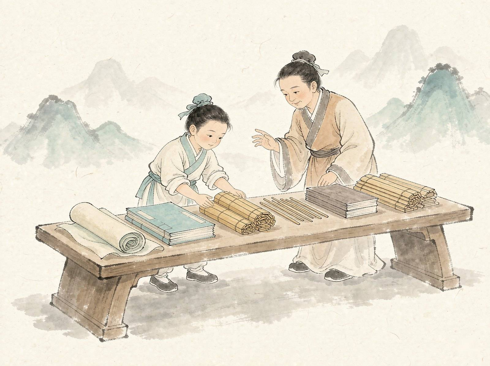

诗书易，礼春秋。号六经，当讲求
五经，就是诗、书、易、礼、春秋。
《诗》调养人的性情，温柔敦厚；
《书》记载上古圣王治国的大道；
《易》观察天地阴阳的变化规律；
《礼》教会我们待人接物的分寸；
《春秋》分辨是非善恶，留下公论。
它们从不同方向，帮我们守住仁敬、中正的心。

诗、书、礼、易、春秋，加上失传的《乐经》，合叫六经。
读六经，不只是读一读、背一背，要用心讲习、细细推求。
讲，是把道理说明白，互相印证；
求，是回头看自己的心，在生活里对照检验。
六经讲的恒常大道，要落在自己的一言一行之中。

落到心上理解
承接上一课存疑：博览典籍之后，容易增长知见傲慢。
五经各有对治的习气。
《诗》对治干枯刻板，令仁心流动有情；《礼》对治放逸散漫，令言行有节；《书》对治空想空谈，懂得治事有次第；《春秋》对治善恶模糊，心中保有明辨；《易》对治执着定相，明白一切都在时变之中，守大本而善权变。
五经合参，正是中庸“中不偏、庸不易”的落地：大本仁义不变，而应事、抒情、治理、判断，都要顺应时机。
阅经而不取文字相，知是借文见心，即是无住。
另有一问：《易》讲变易，如何守住恒定善恶，不落相对主义。
讲求，正是对治这个隐患的法门。
讲，与人对勘，避免自己一个人闭门乱想，把私见当成大道；求，向内心勘验，不把道理停留在口头。
五经各有偏重：诗主情、礼主节、书主政、春秋主断、易主变，全靠乐教的“和”来调和。讲求之时，一边辨析文义，一边体察自心：我的明辨会不会变成苛察？我的通达权变会不会滑入无原则？
经义是标尺，自心是勘验场，讲以正见，求以证心，论而不执，察而不迷，即是无住。
视五经仅为古史、古礼制文献，只做考据；讲求等同于考据辩论，好胜争理，向外求胜
五经核心是心性教化，史料典制只是载体；讲以明义，求以观心，辩论只为校正知见，不执胜负
- 《诗》涵养性情，温柔敦厚；
- 《书》观圣王政道，知治之本；
- 《易》明阴阳时变，知常达变；
- 《礼》立节文分寸，约束身心；
- 《春秋》辨善恶是非，存公道之心。
- 五经协同，从情志、事、天、行、断五个维度护持本心。
- 六经，包含《诗》《书》《礼》《易》《春秋》与《乐经》。
- “讲求”分两层：讲习辨析，明文字义理；反求诸己，日用勘验本心。
- 乐教的内核是“和”，贯通五经，调和性情、是非、权变之间的张力。
- 读经贵在知行相勘，不是收藏知识、博取谈资。
一、勘俗见。区分《易》的大道和术数占卦，读易首要学的是知变守中，不是算命。区分研讨辩论和抬杠争胜，讲求的目标是明道自省，不是赢过别人。
二、现代对照。如同五套练习方案，分别训练情绪、做事、应变、规矩、判断力，共同塑造一个中正仁厚的人格。如同实验研讨，“讲”是一起讨论实验原理，“求”是亲自上手实验、观察自己的状态。
三、承接常变主线。仁义中和之本恒常不变（常）；五经所载的古礼、古政令，属于当时的适配方案，可以参考，不必照搬（可变之相）。仁义中和的常道不变（常）；对经文的注解、研讨方式，可以随人、随时调整（可变之相）。
四、承接教与学二分。师长讲明五经各自教化重心，区分教化本意与时代外壳，属于施教一侧；学人读经之时，反观自己的性情、取舍，是自主修习。师长组织讲习、辨析异同，属于施教一侧；学人听完之后，回自身对照反省，是自主修习。
承接选择力练习：分领五经教化，调情志、知时变、明是非，博观而不生知见傲慢。
诗书易，礼春秋。号六经，当讲求
一字义与句读
诗：《诗经》；书：《尚书》；易：《周易》；礼：多指《礼记》、《仪礼》；春秋：鲁《春秋》。
上句释义：六经之中《乐经》失传，后世治学以《诗》《书》《易》《礼》《春秋》五经为核心典籍，各设教化维度，相辅而成完整的修学体系。
号：称名，合称；六经：诗、书、礼、易、春秋、乐；讲求：讲论辨析，推究义理，反求于心。
下句释义：此五篇加《乐经》，合称为六经；六经为恒常之道的载体，学者应当讲习辨析、推究义理，并且向内反求，在身心日用之中勘验印证。
二命题考辨
（1）五经分工的体系价值
《诗》言志，主情。情若无疏导节制，便会泛滥或者压抑，诗教使人情归于温厚；
《书》载先王政事，主治。看古人如何安天下，明白治理根基在明德、安民；
《易》穷理尽性，主天人变化。一切世事没有固定不变的方案，唯有大本不变，随时调整；
《礼》定节文，主行。内心仁德，要在言行上有分寸，不放肆、不粗疏；
《春秋》别善恶，主断。世道是非容易混淆，需要有公心，知取舍，不随流俗颠倒善恶。
五者不可偏废：有情无礼则荡，有礼无情则枯；知变无是非则滑，有是非不知时变则固，能治而无性情仁德则苛。
（2）对照当下现代语境
今人读书常常偏好单一路径：要么只喜欢谈玄论变（偏重易），要么死守规矩（偏重礼），或是习惯评判他人（类春秋苛察）。
五经并举，恰好是一套平衡方案：既要内心有情，又要有边界分寸；要明辨善恶，又要懂得时机权变；能做事，又不丢失温柔敦厚的底色。
今天很多读书两种极端：一类是考据派，一辈子埋在文献字句里，争论注释优劣，心性毫无长进；一类是“感悟派”，只读自己喜欢的句子，闭门自悟，把个人情绪、偏好当成圣道。
“号六经，当讲求”恰好双向纠偏：要有文本、义理的客观参照（讲），又必须落到身心上验证（求），二者不可偏废。
（3）般若范式互参
五经为教化假名，五镜照一心。
讲习探求，是方便法门。
联动三才五蕴太极空杯模型：虚空自性是明德本体；诗、书、易、礼、春秋，如同五面不同角度的镜子，从情志、政事、时变、仪轨、善恶判断，映照同一个自性。镜子样式不同，能照的虚空没有分别。我们借镜观心，而不执着镜面纹路。自性虚空是常道本体；六经文字是标月之指；讲求，就是循着指头、互相校正，回头看见月亮。讲习、考据、讨论都是指头的辅助，不能把指头本身当成月亮。
呼应“本乎数”：五经配五常，仁义礼智信，一一呼应。六为六经，内外讲求，阴阳成对。
延伸义理：
《金刚经》：离相无住，五经教人在情志、礼法、是非、世事变化之中练无住之心。无诤，讲习而不起诤心，正是讲求的底线。
《道德经》：知常曰明，近于《易》“不易”之常；老子偏于归静，五经动静并举。和光同尘，近乐教之和；老子偏静默，六经讲求主动静相济。
《坛经》：即心即佛，不立文字；五经是“借文字炼心”的阶梯，和禅法可以互为补助。论“如人饮水冷暖自知”，即是“求”的一层；但不废讲习印证，防自欺。
（4）六经体系的收束与用功法门
前面一句铺陈五经，此句收纳《乐经》，复原六经的完整名目，同时给出读经心法。
五经是分相：情、政、行、变、是非；乐是统相，是和。若无“和”的贯通，读经之人容易偏倚：重礼则拘、重易则滑、重春秋则刻。讲求，就是持续的校准机制：讲，破孤陋之蔽；求，破空谈之弊。
儒门的经学，从来不是纯书斋之学，讲求即是知行接口。
三跨典互参（老庄、般若对照）
· 《道德经》：礼者忠信之薄，是勘破礼的外在形式，非废弃礼之本的诚敬，和本句礼教互补。知者不言，勘破浮华口舌之讲，而不废真实向内之求。
· 《庄子》：诗以道志，书以道事，礼以道行，易以道阴阳，春秋以道名分，正是此句古注同源。
· 串联前文：治学次第，小学→孝经四书→六经，至此展开五经各自教化格局。蒙学治学阶梯，小学→孝经四书→六经篇目，至此点明六经研读的核心功夫。
· 《庄子》六经为陈迹，讲求是借迹会心，不滞于迹。：《庄子》六经为陈迹，讲求是借迹会心，不滞于迹。
四和前面课程的张力
次第链条：……→ 如六经，始可读 → 诗书易，礼春秋 → 号六经，当讲求
呼应“人不学，不知义”：知五经分教，调和性情、通达时宜之义；知读经讲求、内外互勘之义；
呼应“玉不琢，不成器”：以五部经典，多方位打磨本心；以讲习、内求持续打磨心性；
呼应“教之道，贵以专”：专守仁义中和大本，分领五经教化而不迷。专守中和大本，讲求而不起诤、不滞文辞。
五1. 《乐经》失传，乐教“和”的内核，如何不靠古经文去体会、践行？
2. 《春秋》褒贬容易流入苛责，如何把握“明是非”和宽厚容人的边界？
3. 《易》讲变易，会不会让人滑入相对主义，失去恒定的善恶准则？
4. 乐经文本失传，讲求乐教，除了古乐，还有哪些日常入手的路径体会“和”？
5. 讲习极易演变成诤论，有没有简单的标尺，一出现就该止息辩论？
6. 向内反求，如何区分是本心流露，还是潜意识里自我美化的幻象？